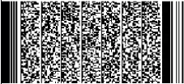

ನಂ.
ನಮೂನೆ – 5
No.
Form – 5

ಕರ್ನಾಟಕ ಸರ್ಕಾರ
GOVERNMENT OF KARNATAKA
ಜನನ ಮತ್ತು ಮರಣಗಳ ಮುಖ್ಯ ರಿಜಿಸ್ಟ್ರಾರರು
Chief Registrar of Births and Deaths
ಜನನ ಪ್ರಮಾಣ ಪತ್ರ

(ಭಾ.ಮಾ.ಸಂ.ಕ್ರ.ಆದೇಶ,1969ರ 12/17ನೇ ವಿಧಿ ಹಾಗೂ ಕೆ.ಮಾ.ಸಂ.ಕ್ರ.ನಿಯಮಾವಳಿ, 1999ರ ನಿಯಮ 8/13ರ ಪ್ರಕಾರ ನೀಡಲ್ಪಟ್ಟಿದೆ)
BIRTH CERTIFICATE
(Issued Under Section 12/17 of the RBD Act, 1969 and Rule 8/13 of the KRBD Rules, 1999)
ಈ ಕೆಳಕಂಡ ವಿವರಣೆಯನ್ನು ಕರ್ನಾಟಕ ರಾಜ್ಯದ ಚಿತ್ರದುರ್ಗ ಜಿಲ್ಲೆಯ ಮೊಳಕಾಲ್ಮೂರು ತಾಲ್ಲೂಕಿನ ಮೊಳಕಾಲ್ಮೂರು (ಗ್ರಾಮ/ಪಟ್ಟಣ)ದ ರಿಜಿಸ್ಟರಿನಲ್ಲಿರುವ ಜನನ ಸಂಬಂಧವಾದ ಮೂಲ ದಾಖಲೆಯಿಂದ ತೆಗೆದುಕೊಳ್ಳಲಾಗಿದೆಯಂದು ಪ್ರಮಾಣೀಕರಿಸಲಾಗಿ
This is to certify that the following information has been taken from the original record of birth which Molakalmuru (village/town) of Molakalmuru taluk of Chitradurga district of Karnataka State.
1) ಹೆಸರು
Name
Name
ಚಂದನಾ
Chandana
Chandana
2) ಲಿಂಗ
Sex
Sex
ಹೆಣ್ಣು
Female
Female
3) ಜನನದ ದಿನಾಂಕ
Date of Birth
Date of Birth
01/01/1980
4) ಜನನದ ಸ್ಥಳ
Place of Birth
Government Hospital, Molakalmuru(TP), Molakalmuru Taluk, Chitradurga District
Place of Birth
Government Hospital, Molakalmuru(TP), Molakalmuru Taluk, Chitradurga District
5) ತಾಯಿಯ ಹೆಸರು
Name of Mother
Name of Mother
ರಾಯಮ್
Rayamma
Rayamma
6) ತಂದೆಯ ಹೆಸರು
Name of Father
Name of Father
ದಾಸರ ಬೋರಯ್ಯ
Dasaraboraiah
Dasaraboraiah
7)ಪತಿ / ಪತ್ನಿಯ ಹೆಸರು
Name of Husband / Wife
Name of Husband / Wife
ಸುರಿ
Suri
Suri
8)ಜನನ ಸಮಯದ ವಿಳಾಸ
Address at the time of Birth
Address at the time of Birth
ಪಿ.ಟಿ. ಹಟ್ಟಿ, ಮೊಳಕಾಲ್ಮೂರು, ಚಿತ್ರದುರ್ಗ – 577535
P.T. Hatti, Molakalmuru, Chitradurga – 577535
P.T. Hatti, Molakalmuru, Chitradurga – 577535
9)ತಂದೆಯ ಶಾಶ್ವತ ವಿಳಾಸ
Father permanent address
Father permanent address
ಪಿ.ಟಿ. ಹಟ್ಟಿ, ಮೊಳಕಾಲ್ಮೂರು, ಚಿತ್ರದುರ್ಗ – 577535
P.T. Hatti, Molakalmuru, Chitradurga – 577535
P.T. Hatti, Molakalmuru, Chitradurga – 577535
10)ನೊಂದಾಯಿಸಿದ ದಿನಾಂಕ
Date of Registration
Date of Registration
24/4/1993
11)ನೊಂದಾಯಿಸಿದ ಸಂಖ್ಯೆ
Registration Number
Registration Number
803162/B/B/2018/085565
12)ಶರಾ (ಯಾವುದಾದರೂ ಇದ್ದರೆ)
Remarks(if any)
Remarks(if any)
--
13) ಪ್ರಮಾಣ ಪತ್ರ ಕೊಡುವ ಪ್ರಾಧಿಕಾರಿಯ ಸಹಿ
Signature of the Issuing Authority
Digitally signed certificate, manual Signature is not required.
Signature of the Issuing Authority
Digitally signed certificate, manual Signature is not required.
14)ಪ್ರಮಾಣ ಪತ್ರ ಕೊಡುವ ಪ್ರಾಧಿಕಾರಿಯ ವಿಳಾಸ
Address of the issuing Authority Health Inspector/Officer
Address of the issuing Authority Health Inspector/Officer
Molakalmuru Taluk, Chitradurga District

Date of issue 17-12-2025